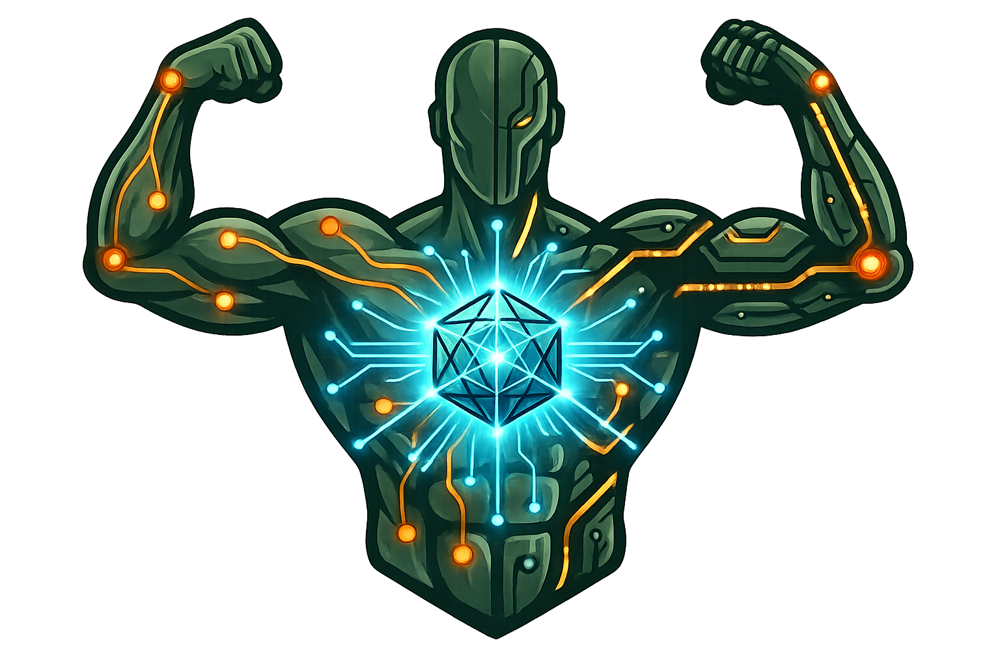

Insert a TCN performance slide — macro-F1 + per-class precision/recall from the latest /evaluate run. Use the REAL number, no placeholder. The deck currently claims capability but shows zero model performance — the one thing a technical evaluator will miss.
340ms / −62% / 280ms / 15% on "From Data to Game Plan" are illustrative, not real output. Fine as a mockup — swap for real profiler output if it will be scrutinised.
Fighter slide → 14 fighters / 7 weight classes (Pacquiao added) · Slide 9 beta → hips=0.3 · Contact → Nick Nguyen · GitHub URL confirmed correct.

Superhuman Motion Analysis
An end-to-end ML pipeline that sees what no human coach can.
What if you could narrow down exactly
what a fighter will do next — before they do it?
Human coaches watch fights.
MotionGuru reads them.
Two coaches, same fight, different conclusions
12-round fight = days of manual review
Sub-300ms tells, fatigue slopes, compound patterns — invisible to humans
No persistence, no schema, no cross-fight trending
Zero manual intervention. Fully deterministic. No LLM guesswork.
OCR reads broadcast timer → FFmpeg extracts rounds losslessly (optional — best suited for full broadcast footage)
YOLO11m-pose + OSNet-x1.0 ReID + Hungarian + Kalman → 18 keypoints per fighter per frame
57 biomechanical features: kinetic chain, guard geometry, head dynamics, cross-fighter interaction
Bidirectional TCN + Temporal Attention → per-frame, per-fighter action labels
107 metrics across 15 behavioral dimensions with confidence tagging
37 threshold rules × 93-strategy library → prioritized game plan + PDF report
Involuntary micro-movements detected sub-300ms before any action
Round-over-round decay slopes — projects when structure collapses
Inter-punch timing at millisecond resolution — metronomic = exploitable
107 metrics cross-referenced — intersecting weaknesses = catastrophic exploits
And more — every dimension the system profiles is a potential edge no human analyst could compute in real time.
Every metric tagged with confidence level — the system knows what it knows, and what it doesn't.
Guard drops >15% post-combo — 340ms recovery window
Straight-line retreat under pressure — lateral movement −62% after Rd 6
Elbow flare 280ms before cross — telegraphed preparatory tell
Round 7+: Read the tell → slip → let combo finish → cut ring → counter inside 340ms window
Why: 3 independent weaknesses converge into one high-% exploit window
EasyOCR reads broadcast timer → auto-detects round boundaries across networks
Strips replays, walk-outs, rest periods — only live action enters pipeline
FFmpeg stream-copy — zero re-encoding, original resolution preserved
Resolution, FPS, codec checks — fail-fast on corrupt inputs
This stage is optional — the pipeline can also accept pre-segmented round clips directly.
45s scan → top-20 frames → fighter identity templates + close-up enrichment
OSNet + guard bonus + pose penalty + zone + color → Hungarian optimal pairing
Clinch detected → anchor threshold ↑0.92, Kalman disabled — prevents ID swaps
Kinematic betas: wrists=1.5 (fast), hips=0.3 (stable) — NaN-safe, camera-cut reset
Wrist velocity · acceleration · elbow extension rate
Guard openness (L/R) · wrist-to-nose · elbow tuck angle
Shoulder · hip rotation · torso lean · kinetic chain velocities
Stance width · COM velocity · weight distribution
Shoulder distance · closing rate · wrist-to-chin proximity
Valid-frame flag · forward-fill ≤3 frames · NaN propagation
Counter-puncher · Super Middle
Defensive genius · Welterweight
Unorthodox giant · Heavyweight
Explosive finisher · Super Bantam
Footwork savant · Lightweight
Power puncher · Heavyweight
Technician · Heavyweight
Fundamentalist · Lightweight
Pressure fighter · Middleweight
Flash KO power · Bantamweight
Elegant boxer · Lightweight
Volume combination · Heavyweight
Rangy jab-heavy · Lightweight
Southpaw volume · Welterweight
Kalman prediction + intersection-aware tracking through clinches and referee blocks
OSNet ReID + multi-template calibration + Hungarian assignment + jump guard
Confidence tagging: direct / proxy_2d / requires_3d — system knows what to trust
85% idle frames → FocalLoss (γ=2.0) + class weights ≤10 + GroupNorm
Count across 36 min · Consistent thresholds · Track 107 metrics · Same input ≠ same output
JSON → readable prose · Adapt tone · Narrative reports · Optional layer only
If Claude API goes down, MotionGuru still produces every metric, every strategy, every finding. The report just won't have prose.
Auto-generate "Top 5 Exploitable" and "Top 5 to Fix" reels with on-screen annotations
jab · cross · hook · uppercut · body · feint · block · slip · duck · parry · clinch — unlocks ~40% dormant metrics
Skeleton-graph reasoning → full whole-round contextual attention at dataset scale
Monocular 3D mesh recovery + streaming inference for live broadcast analysis
Proof of concept with the deepest domain model. Production pipeline running.
NowMMA, kickboxing, Muay Thai, wrestling. Same tracking — swap features & strategy library.
Tennis, fencing, golf. One-vs-one or solo athlete analysis via the same profiler pipeline.
Any sport where biomechanical patterns drive tactical advantage. New sport = new feature layer + strategy library.
Python 3 · PyTorch · NumPy / SciPy
YOLO11m-pose · OSNet-x1.0 (torchreid) · EasyOCR · OpenCV
Bidirectional TCN · Temporal Self-Attention · FocalLoss · GroupNorm
FFmpeg (stream-copy) · fpdf2 (PDF reports) · yt-dlp (acquisition)
AWS EC2 (GPU training) · Local Windows (inference)
Claude API (prose generation only — pipeline works without it)
See what no one else can see.
The future of fight intelligence is computational.
And it's already running.
Nick Nguyen
hieu.n.ng4@gmail.com · https://github.com/BeMoTechs/MotionGuru